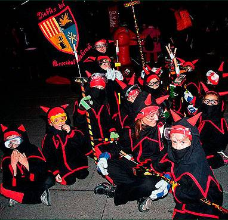

|  |
La
Colla de
Diables del Mercadal Infernal neix per a fer difusió de la
Cultura Popular i Tradicional Catalana. Volem acostar-la a la població
perquè la conegui, perquè s’hi endinsi i hi participi per mitjà de les
activitats del món del foc i també per mitjà de moltes altres activitats
relacionades amb la cultura popular. L’associació, com a entitat integrada
al poble de Sant Andreu de Palomar, la ciutat de Barcelona i Catalunya,
pretén desenvolupar activitats adreçades a fomentar el sentiment de pertinença
i l’associacionisme. Té intenció de participar en el teixit associatiu
del poble, la ciutat i el país, tant en les activitats del món del foc
com en d’altres manifestacions de cultura popular i tradicional, solidaritat
i sostenibilitat en què pugui intervenir. Igualment, l’associació pretén
adreçar-se principalment a un públic familiar i vol servir de nucli integrador.
Malgrat que la Colla està organitzada en diverses seccions i comissions
i que compta amb una junta directiva per a facilitar les qüestions organitzatives
del dia a dia, és una colla participativa i no excloent, la qual cosa
vol dir que s'anima a tots els membres a participar de totes les decisions
i els actes de la Colla, ja siguin correfocs, passejades de bèsties, cercaviles,
actuacions de músics, tallers, etc.
La Colla neix com a associació de caràcter familiar, la qual cosa
vol dir que són benvingudes famílies amb infants i infants amb les seves
famílies. Això no vol dir que exclogui la resta de públic que vulgui venir
a participar de la Colla i dels seus actes. Significa només que els infants
han de participar acompanyats del pare, mare o tutor/a i que aquests necessàriament
també han de ser socis de la Colla.
|
|